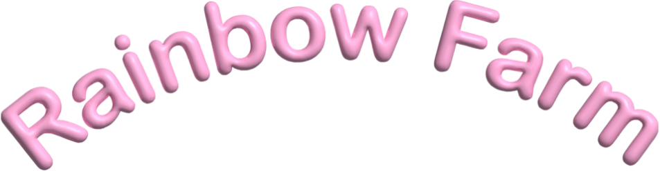

Rainbow Farm er et vegetarisk klik-spil, hvor du skal klikke på grøntsagerne i stedet for kødet. Det vil i sidste ende hjælpe vores søde køer med at overleve. Hver gang du klikker på en grøntsag, får du et point, mens hver gang du klikker på kødet, mister du et liv. Vælg den vegetariske valgmulighed 10x i spillet, for at vinde. Spil Rainbow Farm nu under spil for at prøve!